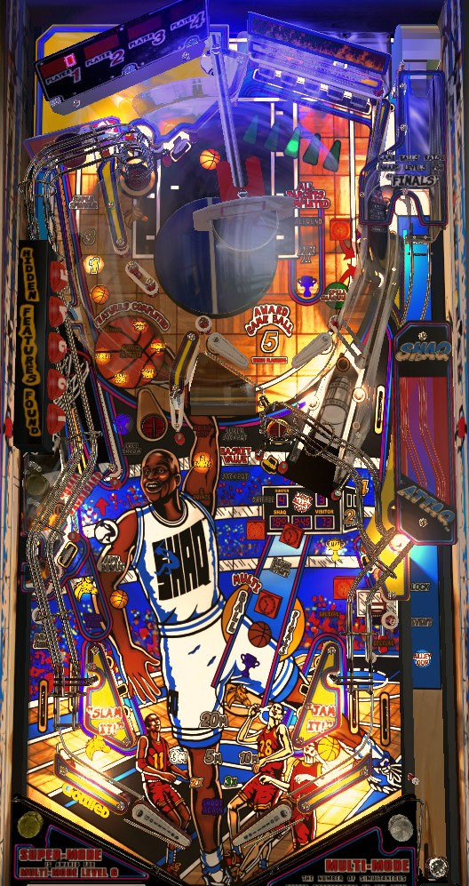

Collect all of one type of item around the game (horse heads, MVP trophies, basketballs, or shot clocks) to light a mode at the right ramp. Light multiball at the right ramp by shooting into the swiveling Basket anytime during single ball play. Bonuses are given for starting multiple modes and/or multiball at once. MVP mode (shoot center drop target repeatedly) is the hardest, but most valuable. The right standup target in the upper playfield gives letters in Shaquille: spell it to qualify Slammin Jammin frenzy multiball at the upper playfield's left upkicker.
The below picture of Shaq Attaq's playfield was taken from the VPX recreation by 32assassin et al.

The shooter lane will light one or more options for awards available when you plunge the ball. If the light is moving between more than one, it will lock in as soon as the ball is plunged.
Alley Oop is always available. The ball is fed to the right flipper. Shoot the swiveling Basket within about 10 seconds to score 8 Basket Points and 1 Game Ball. Both of these are described in more detail later in the guide.
If at least one Event was qualified on a previous ball, one option for the skill shot will be Event, which starts all modes currently lit at the right ramp.
The Lock option is only available immediately after shooting the right ramp with the Multiball event lit. That right ramp shot counts as lock 1; you must use the plunger to lock balls 2 and 3, then multiball begins.
A total of 7 different Events can be started at the right ramp.
Standard events are qualified by collecting all three of an item around the playfield: horse heads, MVP trophies, basketballs, and clocks. At the start of the game, all instances of every item will be lit. Once a mode has been played once, only 1 or 2 of an item will be lit at a time, and slingshots will rotate which one(s) are lit. When a standard event is qualified, the right ramp will flash Begin Event as well as the item insert corresponding to each qualified event. All standard events are 15-second modes.
Horse heads: HORSE event
Horse heads are located at the upper left popper, lower left standup target, and left in lane.
Collect letters in HORSE by shooting the spinner at the left orbit. The first 4 shots each score 10 Basket Points. The 5th shot awards 3 Game Balls and completes the mode.
MVP trophies: MVP event
MVP trophies are available at the free throw saucer to the left of the center ramp, the drop targets, and the right side lane.
All drop targets in the top right will go down, then the middle one will pop back up. Hit the lone drop target to receive an award; the center drop target will pop back up. Hits to this target during the mode score Extra Ball (or 20,000,000 if one has already been earned), then 50,000,000, then 100,000,000, then 300,000,000 + complete the mode.
Basketballs: Game Balls event
Basketballs are available at the spinner shot, the standup target near the upper left popper, and the right in lane.
Shoot the vary-target on the left to earn Game Balls: 3 Game Balls for a full hit, or 2 Game Balls for any other hit.
Clocks: Beat the Buzzer event
Clocks are available at the right standup target in the upper playfield, the center standup target next to the right ramp, and the lower right standup target.
Shoot the swiveling Basket a single time. This awards 1 Game Ball, completes the mode, and lights the lower right standup target for Special for about 15 seconds.
Finals Event is qualified immediately after playing all 4 standard events. You do not need to complete any of them along the way, you just need to play all 4. Finals Event is usually played for an award of 100,000,000 points; however, if you have at least 5 Game Balls,, you will get the option to pay 5 Game Balls to play Finals Event for 300,000,000 points instead.
Finals Event is a 30-second single-ball mini-wizard mode. 5 shots will flash: the vary-target, the left orbit spinner, the swiveling Basket, the right ramp, and the right side lane. Make all 5 within the time limit and without draining to earn the award decided at the beginning of the mode.
Points Multi is the standard multiball on Shaq Attaq. Shooting the swiveling Basket at any time during single ball play (except during Finals Event) lights the right ramp for Multiball. If you have not played Points Multi yet in the current game, the right ramp will remain lit for Multiball until collected. Otherwise, the right ramp will only be lit for Multiball for about 10 seconds. Shooting the right ramp when it is lit for Multiball awards lock #1; locks 2 and 3 are done immediately afterward from the shooter lane.
The goal of Points Multi is to earn jackpots. There are 2 ways to score a jackpot:
Jackpots score 20,000,000 points. Making a jackpot through either method lights Super Jackpot for about 8 seconds; making another jackpot through either method during this time scores 100,000,000 points and resets the 8-second timer. You can repeatedly score Super Jackpots by shooting the swiveling Basket several times in quick succession. The Super Jackpot is downgraded back to a regular jackpot if the 8-second timer expires. This continues until there is just 1 ball in play. There is no ball save or quick restart for Points Multi; but once single-ball play resumes, the swiveling Basket will remain lit for a jackpot for about 15 seconds.
Shaq Attaq is a 3-ball multiball event that serves as a carryover award. In front of the left spinner orbit is a basketball labelled Features Completed. Along the outside of the basketball are 6 tasks which light up when completed. Tasks that are lit carry over across balls, players, and games. When all 6 are completed, the right ramp can be shot to start Shaq Attaq multiball. The 6 tasks are:
During Shaq Attaq, any switch in the game awards 1 Basket Point- that's it. This continues until single ball play resumes, and there is no ball save or quick restart.
To make Shaq Attaq easier to reach, the game may spot randomly complete one of the 6 tasks at the end of a game.
As many as 6 of the 7 Events can be started at the same time (all 4 Standard Events, Points Multi, and Shaq Attaq). If you start more than one Event at once, your "Multimode Level" is equal to the number of Events running simultaneously. During Multimode, the left spinner orbit and the right side lane each score 1,000,000 points times the number of Events running at the same time. Starting Multimode with level 3 or higher is itself one of the requirement tasks for Shaq Attaq. Multimode Level 6 is called Supermode, and adds the further rule of having all shots to the right ramp score 100,000,000 points.
Slammin Jammin is the closest thing Shaq Attaq has to a wizard mode. It can be started by either spelling the word SHAQUILLE or by cashing in 10, 11, 12, or 13 Game Balls. Game Ball cash-ins are explained below. SHAQUILLE letters can be earned by hitting the right side standup target in the upper playfield, or as one possible award from the Tip-Off mystery choice at the upper left popper. If you go the route of spelling SHAQUILLE, you must shoot the upper left popper to play Slammin Jammin; it will be a choice during the next Tip-Off mystery.
Slammin Jammin is a 3-ball multiball (2 balls are locked at the plunger after you make the decision to play Slammin Jammin). During this multiball, every switch in the game scores 5,000,000 points. Points earned from Slammin Jammin are not given immediately: they are awarded alongside your end of ball bonus, so absolutely do not tilt on a ball where Slammin Jammin is played. Slammin Jammin ends when single ball play resumes, and like Points Multi and Shaq Attaq, there is no ball save or quick restart at the beginning of the multiball. If you play Slammin Jammin more than once in one ball, their totals are added together at the end of that ball.
Various features around the game award Game Balls:
Completing the 1-2-3-4-5 shot sequence gives you the option to cash in all of your current Game Balls for an award. The exact award you get depends on how many Game Balls you have.
I have not verified the maximum number of Game Balls that can be accrued at once, but it is almost certainly either 99 or 255. At the end of the game, each unredeemed Game Ball is worth 5,000,000 points as an end of game bonus.
Basket Points are collected from various features:
All earned Basket Points are multiplied by the current bonus multiplier. Completing the drop targets once on a ball awards 2x bonus, and completing them twice awards 3x. On the final ball of the game on non-competition settings, 3x multiplier is given for free.
Three extra balls are available for reaching certain numbers of Basket Points. The second and third extra balls are at 200 and 700 Basket Points; the first extra ball can be at 50, 100, or skipped entirely. These are hurry-up extra balls, available only for about 15 seconds at the lower left standup target.
There is a maximum of 999 Basket Points in a game. Each player's Basket Points are shown on a seven-segment display in the back left of the game. On non-competition settings, players earn 100,000 points per earned Basket Point as an end of game bonus.
If the basketball item toward Game Balls Event at the left orbit spinner has already been collected, Super Spinner is available. Super Spinner is lit after shooting the spinner itself, the center-right popper, or the right in lane. The first two Super Spinner awards during the game are 5,000,000 and 10,000,000 points; after that, all Super Spinners give 3 Basket Points. The 5,000,000 and 10,000,000 awards are only given once, rather than being values per spin of the spinner.
Shooting the vary-target at any time awards 300,000, 1,000,000, 3,000,000, or 5,000,000 points depending on how hard it was hit, as well as advancing the base bonus value shown near the flippers.
After making the right in lane, Break the Backboard is lit at the vary-target for a few seconds. Shooting the vary-target when lit for Break the Backboard scores a progressive award. The awards are 10,000,000 points, then hurry-up extra ball, then 10 Basket Points, then 1 Game Ball. After 1 Game Ball, the sequence repeats, skipping over the hurry-up extra ball if that extra ball has already been collected. Game settings determine whether Break the Backboard requires a full hit, a half hit, or any hit to the vary-target.
During single ball play when no Events are running, the upper left popper gives a Tip-Off mystery award. You are given a choice between two options: press the left or right flipper to decide. The left flipper option is almost always points, such as 5,000, 5,000,000, 10,000,000, or 20,000,000. The right flipper option can vary widely, and may give Basket Points, a Game Ball, SHAQUILLE letters, hurry-up or instant extra ball, Free Throws, or qualify an Event. If you have spelled SHAQUILLE, the option will always be 30,000,000 points or Slammin Jammin- always choose Slammin Jammin, as it's far more valuable, and the game will reset the SHAQUILLE letters either way.
After reaching 3x bonus- either via 2 completions of the drop targets, or getting the 3x for free on the final ball- each completion of the drop target bank at the top of the game scores a Rebound. Collecting a Rebound is one of the 6 tasks toward Shaq Attaq multiball. Rebounds score 5,000,000, then 10,000,000, then a repeatable 20,000,000, plus a Game Ball each.
Shooting the center standup target just to the left of the right ramp starts Dribble. During Dribble, hit this target repeatedly to receive awards: 5,000,000, then 10,000,000, then a repeatable 3 Basket Points. Dribble times out after about 15 seconds without the center standup target being hit. For the last 5 seconds or so before Dribble times out, the left out lane is lit for Drain Shield, during which time a left out lane drain will be fed back to the shooter lane and allowed to replunge at no penalty. Shooting the Dribble target is too dangerous to make these awards worthwhile.
Shaq Attaq has 5 "hidden features". When one is found, the display will reveal what the hidden feature was, and one of the basketballs along the left side of the game will light up. The 5 Hidden Features are always the same in every game.
A points award is given for finding Hidden Features: 10,000,000 for one, 30,000,000 for two, 100,000,000 for three, 300,000,000 for four, or 1,000,000,000 for all five. This award is given either at the end of every ball, or at the end of the game; default behavior is end of game only.
Shaq Attaq has a conventional in/out lane setup. In lanes award a Horse head (left) or Basketball (right) item toward qualifying an Event at the ramp. The right in lane also qualifies Super Spinner and Break the Backboard. The left out lane is lit for Drain Shield when Dribble is ending. The right out lane is lit for Special as a consolation on the final ball of a low scoring game.
End of ball bonus is either 3,000,000, 5,000,000, 10,000,000, or 20,000,000, depending on whether the vary-target was hit 0, 1, 2, or 3+ times on the ball. Bonus multiplier can be 2x or 3x; 2x requires completing the drop targets once, and 3x requires completing them twice or can be given for free on the final ball of the game. End of ball bonus also includes all Slammin Jammin scoring if that multiball was played at least once. End of game bonus also includes scoring for any Hidden Features found, 100,000 points per Basket Point, and 5,000,000 points per Game Ball (none of which is affected by the bonus multiplier). Bonus multiplier also affects all Basket Points earned on a ball.
Timers on Events, Break the Backboard, Hurry-up Extra Balls, and the Super Jackpot are all variable, but only listed in the game's manual as easy, medium, or hard. The settings for the length of Finals Event or strongly defined as 20, 30, or 40 seconds.
The trade value of a Game Ball if the player has 14+ of them can be 10,000,000 or 30,000,000 instead of 20,000,000 each.
The per-switch value of Slammin Jammin can be 3,000,000 or 10,000,000 instead of 5,000,000.
On hard settings, Hidden Feature 3 can only be earned during MVP event, and Hidden Feature 4 requires taking the 5,000 point option 3 times.
Alley Oops can award 5 or 10 Basket Points instead of 8.
SHAQUILLE letters can be reset each ball instead of carrying over.
Like many 90s Premier Gottlieb games, this game has a reduced scoring mode. When active, this setting does the following: